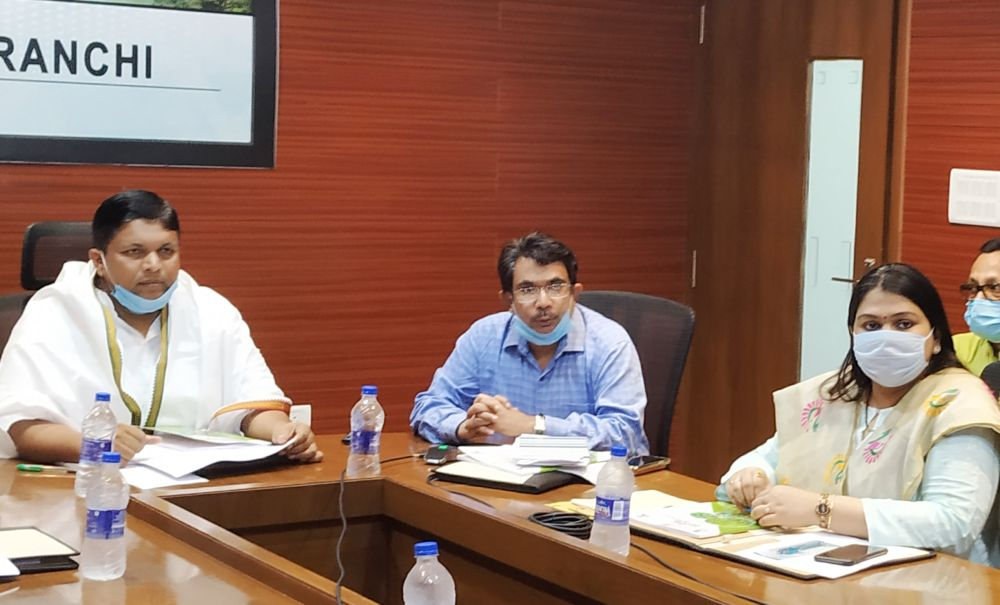
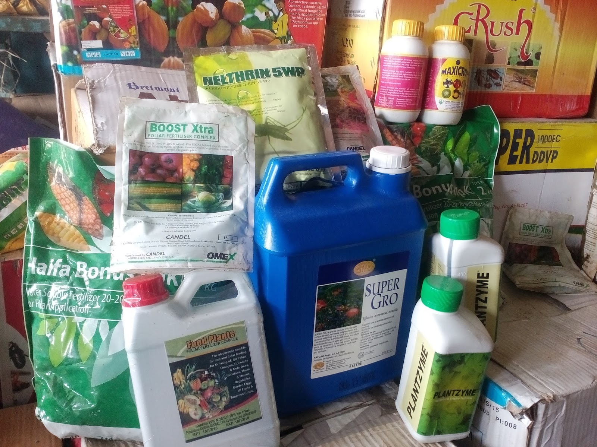

Welcome to the Subsidized Fertilization Distribution System!
भारत सरकार | Government of India, Ministry of Agriculture & Farmers Welfare
Subsidized Fertilizer Distribution System
Ensuring fair and timely distribution of fertilizers to farmers.

🌿 Growth of Nation Depends on Its Soil!

❮❯
Official
Government Support
💰 Subsidies on Urea, DAP, and other fertilizers.
🤝 Financial aid through PM-KISAN.
🔬 Research & Development to improve soil fertility.
📚 Training programs for modern farming techniques.
"These initiatives ensure long-term agricultural sustainability and farmer prosperity."
Our Journey Through Time
Fertilizers have always been pivotal in strengthening the agricultural backbone of our nation. Recognizing their critical role, the government initiated numerous subsidy schemes to empower farmers. However, obstacles like corruption, unequal distribution, and process delays often hindered progress.
The Turning Point
To overcome these challenges, the Subsidized Fertilization Distribution Management System was introduced. This digital system brought a wave of transformation by ensuring transparency, traceability, and accountability in fertilizer distribution.
Since its inception, the system has empowered millions of farmers to access fertilizers at subsidized rates, simplifying the journey from registration to distribution. As it continues to evolve, it integrates the latest technologies and aligns with updated government policies to ensure lasting agricultural prosperity.